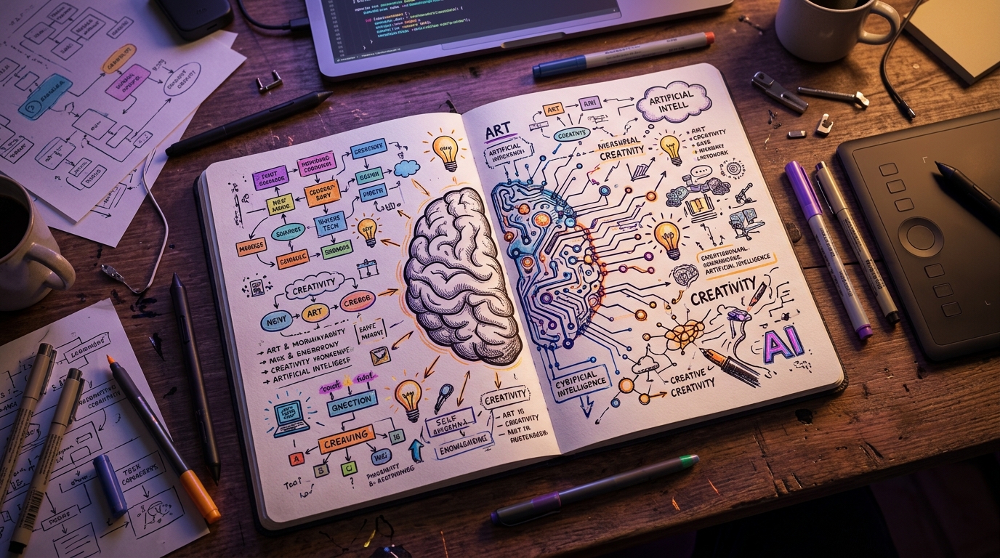

PRØV DET I PRAKSIS
Browseren kunne ikke gemme din fremdrift.
Find en idé, giv den din retning, og tag den med ind i din AI.
Dit materiale. Dine valg. Langt flere muligheder.

Dine 13 originale læringsspor fra AI Scout, samlet med studiet. Vælg et emne, prøv en konkret øvelse, og åbn den tilhørende prompt direkte i dit arbejdsområde.
Browseren kunne ikke gemme din fremdrift.
Åbn videobiblioteket på AI Scout. Videoer og adgang forbliver dér; de er ikke downloadet eller flyttet ind i studiet.
De 15 værktøjsbeskrivelser fra AI Scout. Kildens eksempel-/teststatus er bevaret; beskrivelserne er ikke blevet genverificeret her.
Prøv en anden søgning, eller gem nogle idéer med hjertet.
Her møder dine originale PromptSwipe-kort og AI Scouts læringsindhold det filmiske design fra Experience Hub. Brug studiet til billeder, læring, hverdagsopgaver og nye projekter. Tjenester som Drive og Gmail kræver, at du selv forbinder dem i din valgte AI.